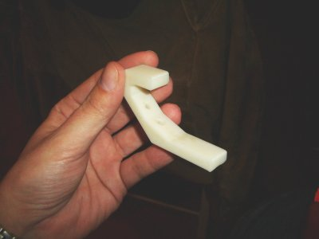
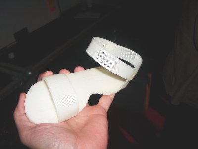
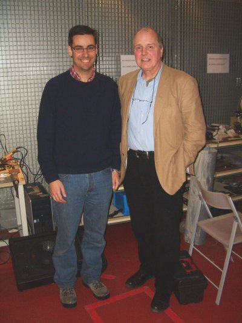

El martes 2 de Febrero tuve el privilegio de asistir a la charla que dió Adrian Bowyer sobre el proyecto Reprap. El lugar fue el medialab-prado, a las 19h de la tarde. Me enteré a través de Barrapunto y salí disparado para asistir. Sólo puedo decir una cosa:
Ha sido una de las conferencias más interesantes de las que he asistido en mi vida
He estado siguiendo el proyecto reprap desde hace varios años, pero sólo era una mera curiosidad. Ahora que lo he visto de cerca y he comprobado cómo son las piezas que se pueden fabricar de forma casera, estoy impactado. Estuve durante toda la charla con ese presentimiento de que estábamos al comienzo de algo grande. Es la semilla de un futuro completamente revolucionario.
Pude tocar con mis manos las piezas que tantas veces había visto en la web. Una es un gancho para usarlo de perchero. Cualquiera que se haya fabricado la “impresora 3D” lo puede “imprimir”:

Esta otra pieza es un picaporte para una puerta. Cualquiera puede diseñarse su propio objeto y luego “imprimirlo”:
O incluso unas sandalias para niños:

Por supuesto que con RepRap se pueden hacer los módulos Y1 para fabricarte tus propios robots modulares. Y ese es mi interés de este proyecto: diseñar robots que puedan ser construidos con Reprap.
Y claro, no me pude resistir a hacerme una foto con Adrian. Es todo un privilegio 😉

Durante esta semana y la siguiente, se está haciendo un taller de Reprap en el Medialab-prado. Voy a asistir a todas las sesiones que pueda. Os iré contando.
Qué pasada!!
Avísame cuando se pueda construir tu propio coche… O tu propia casa 😀
¿Exactamente sobre qué material se “imprime”?
Un saludo
Hola Esteban!
Se pueden usar diferentes tipos de materiales plásticos. El picaporte de la puerta y el perchero están hechos del mismo material que las piezas de lego. Pero como son piezas macizas, son muy consistentes. Además son extremadamente ligeras.
Hay otro material que es biodegradable. Así te puedes hacer tus propios objetos “no contaminantes”🙂
Sin duda es una tendencia, así lo comentan por el MIT.
Las impresoras 3D (con nuevos materiales) serán cada vez una de las herramientas más cotidianas: innovación pura !!